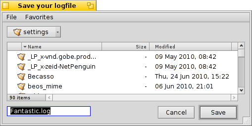

Українська
Українська Català
Català Deutsch
Deutsch English
English Español
Español Français
Français Italiano
Italiano Magyar
Magyar Polski
Polski Português
Português Português (Brazil)
Português (Brazil) Română
Română Slovenčina
Slovenčina Suomi
Suomi Svenska
Svenska 中文 ［中文］
中文 ［中文］ Русский
Русский 日本語
日本語 Додатки командної стрічки властиві Haiku
Додатки командної стрічки властиві Haiku
| Розташування: | /boot/system/bin/ /boot/system/non-packaged/bin/ ~/config/bin/ ~/config/non-packaged/bin/ |
Всі додатки командної стрічки, що постачаються з Haiku знаходяться або в /boot/system/bin або в
/boot/common/bin. Ваші власні або додатково встановлені ~/config/bin. Всі ці розташування є частиною змінної PATH і тому автоматично знаходяться.
Нижче наведений список не є вичерпним списком всіх специфічних додатків командної стрічки Haiku, а лише спробою виділення найкорисніших, що можливо вам смакуватимуть. Спробуйте ознайомитись з тим що є у теці bin/ на свій розсуд. Виконання програми з параметром --help показує використання команди і всіх її можливих варіантів.
 Стосовно атрибутів: listattr, catattr, addattr, rmattr, copyattr
Стосовно атрибутів: listattr, catattr, addattr, rmattr, copyattr
Дані команди використовуються для відображення, зчитування, додавання та видалення атрибутів файлів. Пам'ятайте, що ці мета-дані в даний час доступні тільки на томах відформатованих у BFS. Переміщення файлів на інші файлові системи видалить всі атрибути!
Всі ці команди описано в розділі Атрибути у Терміналі.
Стосовно index: lsindex, mkindex, reindex, rmindex
Цими командами ви перераховуєте, виконуєте, переиндексовуєте та видаляєте атрибути BFS індексу. Кожен том має власний індекс, пам'ятайте, це при копіюванні файлів з одного тому на інший.
Ці команди описані в розділі Index.
Стосовно обслуговування пакетів: package, pkgman
Команда package використовується для обслуговування пакетів HPKG. Подивіться на розділ Встановлення програм для вивчення основ. Зазвичай інструмент haikuporter використовується для створення так званих рецептів для автоматичного складання пакетів.
pkgman використовується для пошуку, установки, оновлення і видалення пакетів. Дозволяє додавати, видаляти сховища пакетів та освіжати їх списки. Особливий вид поновлення викликається з параметром full-sync: Він є агресивніший та дозволяє при необхідності відновлювати старі версії і видаляти пакети.
Для деталізації параметру вводять "--help", наприклад, pkgman search --help.
Використання команд скриптування
Ось кілька інструментів командного рядка, які особливо корисні для написання сценаріїв (дивись також розділ Bash and Scripting (Bash і створення сценаріїв)).
alert | alert викликає вікно з типовим попередженням з наперед визначеною іконкою та пояснювальним текстом з трьома кнопками. Вона повертає назву натиснутої кнопки і стан виходу (починаючи з 0). Як приклад це зроблено у стрічці: alert --idea "FantasticApp(tm) installed successfully! Would you like a link to it?" "On Desktop" "In Deskbar" "No thanks"
| |
filepanel | filepanel відображає панель завантаження або збереження файла і дозволяє користувачеві вибрати файл або місце розташування. Як результат ви отримаєте обраний файл або шлях папки. Є кілька параметрів, доступних, наприклад, для встановлення початкової теки, заголовка вікна, типового імені при збереженні або обмеженні дозволених типів файлів. Приблизно ось так filepanel -s -t "Save your logfile" -d ~/config/settings -n Fantastic.log  | |
hey | hey крихітний допоміжний інструмент, який посилає BMessages до програм і видає їхню відповідь. Він може бути використаний для виконання сценаріїв додатків, тобто "дистанційного керування" програмою зі сценарію або командного рядка. Його використання трохи складніше... Дякуємо за BeOS Bible Скоту Хакеру та прекрасний hey підручник Крісу Херботу. | |
query | query is the commandline version of the Find panel. In fact, a quick way to generate the search term is to build a query in the Find panel, switch to , add double quotes (") in front and back and paste the whole string after your query command in Terminal or your script. | |
waitfor | waitfor is a nice way to wait for a particular application or thread to be started or to have ended. |

Other commands
checkfs | checkfs is an important tool to check for errors in your file system. Simply add a volume name like /Haiku or device path and it'll run through every file and correct inconsistencies where possible. | |
desklink | desklink can install an icon for any file, folder, query or application in the Deskbar tray. It also offers the option to provide a context menu when right-clicking an icon to execute special actions. As an example, try this to add the commandline app screenshot with various options (the "\" in the first line is just for the line break in Terminal): desklink "cmd=Active window (2s):/bin/screenshot --window --border --delay 2" \ "cmd=Remove replicant:desklink --remove=screenshot" /bin/screenshot
| |
diskimage | diskimage lets you register a regular file as disk device. For example, you can register a Haiku anyboot image, mount it in Tracker and copy, edit or remove files there before using it as source in the Installer. | |
launch_roster | The launch_daemon starts all sorts of services and applications at boot-up. For some it was instructed to re-start them if they were quit. If you don't want that – maybe you'd like to test a modified Tracker, for example – you use launch_roster to stop the re-starting of the application before quitting it. Similarly, you can start it again or get info about it. Without parameter, launch_roster lists all apps/services that are under its control. launch_roster stop x-vnd.be-tskb | |
mountvolume | mountvolume is preferred by many to mount local partitions and disks, because its usage is so easy: just call it with the name of the partition and you're done. Try --help for more options. mount can additionally mount remote disks by using a network filesystem, like NFS4. You specify the used filesystem with the -t parameter and the remote location with the -p parameter. As filesystem parameter you can use anything you find in /system/add-ons/kernel/file_system (and corresponding file hierarchies under ~/config or "non-packaged", of course). You also have to create a folder as mountpoint. Here's an example: mkdir -p /DiskStation mount -t nfs4 -p "192.168.178.3:volume1" /DiskStation | |
open | open is a very handy little tool. With it you open any file with its preferred application, or start a specific application by its signature without the need to know its exact path. It also works with URLs and even with the "virtual" directories . for the current directory and .. for the parent, opening the folder in Tracker. | |
ramdisk | A ramdisk is like a harddisk running only in the computer's memory. That makes it very fast but also volatile, because its contents vanishes when you shut down the computer, or it crashes or you experience a blackout. ramdisk create -s 1gb mkfs -q -t bfs /dev/disk/virtual/ram/0/raw RAMses mountvolume RAMses Note: When creating a ramdisk, the ramdisk command prints out the path to it. If you create several disks, that path /dev/disk/virtual/ram/0/raw will change! To preserve the contents, at least if no calamity like a blackout etc. strikes, a ramdisk can be set up to read/write an image on the harddisk. For that, you need to supply a file of the desired size that will be read from every time you start your ramdisk, and written to when you unmount it. To create an image file "RAMimage" of 500MiB and format it, do this: dd if=/dev/zero of=RAMimage bs=500M count=1 mkfs -q -t bfs /dev/disk/virtual/ram/0/raw RAMimage From now on, you start the ramdisk like this: ramdisk create RAMimage mountvolume RAMimage It's very important to always cleanly unmount you ramdisk, either from Tracker or with unmount /RAMimage, or the changes won't be written back to the image file! |